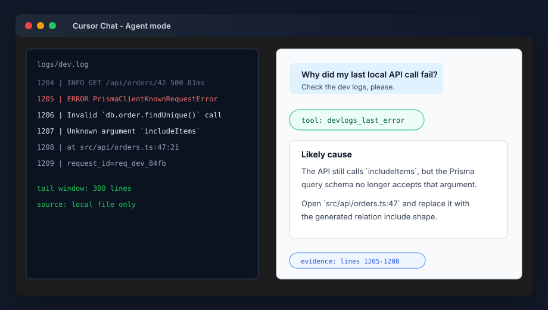
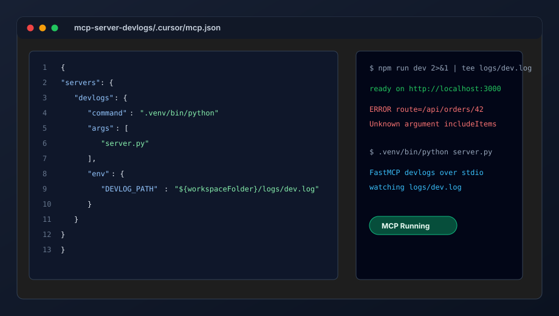
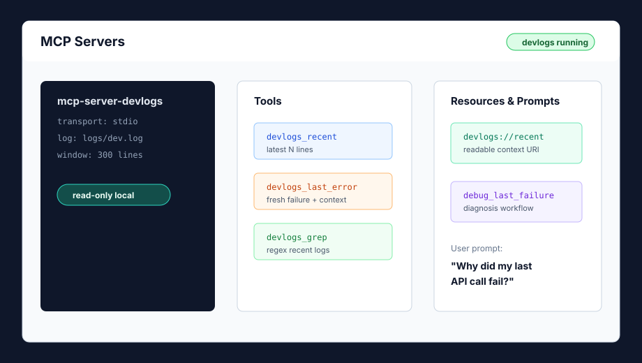

🪵 The core concept
mcp-server-devlogs is a lightweight MCP server that watches your local application logs:
logs/dev.log, tmp/server.log, Docker output captured to a file, or any stream your app writes during development.
It exposes recent errors directly to your LLM client through MCP tools, resources, and prompts. The model no longer waits for you to copy a stack trace from a terminal. It can inspect the last crash, summarize the likely cause, and suggest the next file to open.
Snapshot A — The local debugging loop after MCP

🔥 The problem it solves
Local development has a tiny, repeated tax: request fails, terminal screams, developer drags over 80 lines, copies the wrong half of the stack trace, pastes into Cursor or Claude Desktop, then explains what route they just hit.
You do that dozens of times a day. It is not dramatic. It is just friction, and friction wins by being boring.
Manual stack-trace ferrying
- Switch terminal → editor → chat → terminal
- Paste stale logs from the wrong request
- Lose timestamp, route, request id, and nearby context
- Ask the model to reason from a messy clipboard blob
Ask the client
- "Why did my last local API call fail?"
- The model calls
devlogs_last_error - It reads
devlogs://recentfor surrounding lines - You get a diagnosis tied to the freshest evidence
🧭 Architecture
This is the same shape as bigger log-analysis MCP systems, just pulled down to localhost. AWS Labs' Log Analyzer with MCP wraps CloudWatch Logs for discovery, search, analysis, and correlation. Our devlogs server wraps a local append-only file and optimizes for one question: what just broke?
Fig 01 — Local log tailer MCP flow
flowchart LR App["Local app
npm run dev · uvicorn · rails s"] --> Log["logs/dev.log"] User["Developer"] --> Host["MCP host
Cursor · Claude · VS Code"] Host --> Client["MCP client"] Client --> Server["mcp-server-devlogs
FastMCP over stdio"] Server --> Ring["tail buffer
last N lines"] Server --> Tools["Tools
last_error · grep · around"] Server --> Resources["Resources
devlogs://recent"] Server --> Prompts["Prompts
debug_last_failure"] Ring --> Log Tools --> Ring Resources --> Ring
Snapshot B — Config + server running locally

⚡ Build the server
Create a tiny project:
mkdir mcp-server-devlogs
cd mcp-server-devlogs
python3 -m venv .venv
source .venv/bin/activate
pip install fastmcpCreate server.py:
from collections import deque
from dataclasses import dataclass
from pathlib import Path
import os
import re
from typing import Iterable
from fastmcp import FastMCP
LOG_PATH = Path(os.getenv("DEVLOG_PATH", "logs/dev.log")).expanduser()
WINDOW = int(os.getenv("DEVLOG_WINDOW", "300"))
ERROR_RE = re.compile(r"(error|exception|traceback|failed|panic|fatal)", re.I)
mcp = FastMCP("mcp-server-devlogs")
@dataclass
class LogLine:
no: int
text: str
def tail(path: Path = LOG_PATH, limit: int = WINDOW) -> list[LogLine]:
if not path.exists():
return []
buf: deque[str] = deque(maxlen=limit)
total = 0
with path.open("r", encoding="utf-8", errors="replace") as f:
for total, line in enumerate(f, start=1):
buf.append(line.rstrip("\n"))
start = max(1, total - len(buf) + 1)
return [LogLine(start + i, text) for i, text in enumerate(buf)]
def render(lines: Iterable[LogLine]) -> str:
return "\n".join(f"{line.no:>6} | {line.text}" for line in lines)
@mcp.tool
def devlogs_recent(lines: int = 120) -> str:
"""Return the latest local development log lines."""
return render(tail(limit=min(lines, 600))) or "No log lines found."
@mcp.tool
def devlogs_last_error(context: int = 35) -> str:
"""Return the latest error-like log line with surrounding context."""
lines = tail(limit=WINDOW)
hits = [i for i, line in enumerate(lines) if ERROR_RE.search(line.text)]
if not hits:
return "No recent error-like lines found."
i = hits[-1]
start = max(0, i - context)
end = min(len(lines), i + context + 1)
return render(lines[start:end])
@mcp.tool
def devlogs_grep(pattern: str, lines: int = 200) -> str:
"""Search recent local logs using a case-insensitive regex pattern."""
regex = re.compile(pattern, re.I)
matches = [line for line in tail(limit=min(lines, 1000)) if regex.search(line.text)]
return render(matches[-80:]) or f"No matches for {pattern!r}."
@mcp.resource("devlogs://recent")
def recent_resource() -> str:
"""Readable resource containing the latest local development logs."""
return devlogs_recent(160)
@mcp.prompt
def debug_last_failure() -> str:
"""Prompt template for diagnosing the freshest local failure."""
return (
"Use devlogs_last_error first. Then explain the likely root cause, "
"the file or route to inspect, and the smallest next experiment."
)
if __name__ == "__main__":
mcp.run()logs/dev.log, or pipe it there with npm run dev 2>&1 | tee logs/dev.log.
What the tools mean
| Capability | MCP type | Why it exists |
|---|---|---|
devlogs_recent | Tool | Pull the newest lines when the model needs broad context. |
devlogs_last_error | Tool | Jump straight to the freshest failure with surrounding lines. |
devlogs_grep | Tool | Search for route, request id, status code, exception class, or user id. |
devlogs://recent | Resource | Expose recent logs as readable context without inventing a function call. |
debug_last_failure | Prompt | Give the model a reusable debugging workflow. |
🧷 MCP configs
MCP config shapes vary slightly by host. The important parts are the same: run the venv Python, point it at server.py, and pass DEVLOG_PATH.
Claude Desktop
On macOS this usually lives in ~/Library/Application Support/Claude/claude_desktop_config.json.
{
"mcpServers": {
"devlogs": {
"command": "/absolute/path/mcp-server-devlogs/.venv/bin/python",
"args": ["/absolute/path/mcp-server-devlogs/server.py"],
"env": {
"DEVLOG_PATH": "/absolute/path/your-app/logs/dev.log",
"DEVLOG_WINDOW": "300"
}
}
}
}Cursor / VS Code style workspace config
Use a workspace-level MCP file such as .cursor/mcp.json or .vscode/mcp.json, depending on your host.
{
"servers": {
"devlogs": {
"command": "/absolute/path/mcp-server-devlogs/.venv/bin/python",
"args": ["/absolute/path/mcp-server-devlogs/server.py"],
"env": {
"DEVLOG_PATH": "${workspaceFolder}/logs/dev.log"
}
}
}
}Amazon Q CLI style config
AWS Labs' Log Analyzer docs show Amazon Q reading MCP servers from ~/.aws/amazonq/mcp.json. A local devlogs variant can use the same idea:
{
"mcpServers": {
"devlogs": {
"command": "/absolute/path/mcp-server-devlogs/.venv/bin/python",
"args": ["/absolute/path/mcp-server-devlogs/server.py"],
"env": {
"DEVLOG_PATH": "/absolute/path/your-app/logs/dev.log"
}
}
}
}Snapshot C — Tools exposed to the AI host

🧠 MCP concepts covered
What this project teaches
- Host — Cursor, Claude Desktop, VS Code, Amazon Q, or another MCP-aware app.
- Client — the connector inside the host that speaks JSON-RPC to your server.
- Server — the local Python process wrapping your log file.
- Transport — stdio for local development; Streamable HTTP when you go remote.
How the model gets useful context
- Tools perform bounded actions: recent, last error, grep.
- Resources expose stable readable URIs like
devlogs://recent. - Prompts package repeatable workflows for debugging.
- Elicitation can ask the user for a missing route, request id, or time window when supported.
Fig 02 — One debugging question, one MCP loop
sequenceDiagram
autonumber
participant U as Developer
participant H as AI Host
participant C as MCP Client
participant S as devlogs server
participant L as logs/dev.log
U->>H: Why did my last API call fail?
H->>C: tools/call devlogs_last_error
C->>S: JSON-RPC over stdio
S->>L: read tail window
L-->>S: latest stack trace
S-->>C: compact context
C-->>H: tool result
H-->>U: cause, file, next experiment
🛡️ Hardening
- Default read-only — log tools should never mutate your app or shell out.
- Limit output — cap lines, bytes, and regex matches so one giant traceback does not flood context.
- Redact secrets — scrub tokens, cookies, passwords, Authorization headers, and connection strings.
- Pin paths — allow explicit log files only; do not accept arbitrary filesystem reads from tool input.
- Track rotation — handle truncated files, renamed logs, and Docker restart churn.
- Return evidence — include line numbers and timestamps so the model can cite what it used.
🙏 Credits
Inspiration and credit to awslabs/Log-Analyzer-with-MCP, a Python MCP server for AWS CloudWatch Logs that exposes log discovery, search, summary, and correlation features to AI assistants. Their docs also show practical MCP client configuration patterns for Claude Desktop and Amazon Q CLI.
Spec notes: MCP specification overview · July 28, 2026 specification update